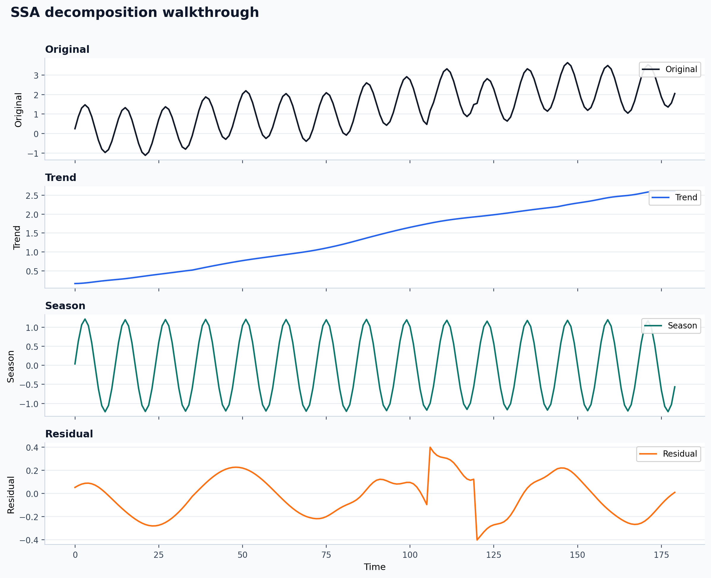
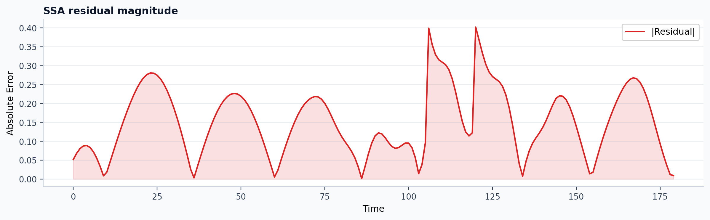

Visual tutorial: one univariate decomposition
This walkthrough is the shortest path from a raw series to interpretable figures.
Goal
Use one method on one synthetic series and inspect:
- the original signal,
- the extracted trend,
- the extracted seasonal component,
- the residual magnitude.
Script
POSIX shell:
PYTHONPATH=src python examples/visual_univariate_walkthrough.py \
--out-dir out/visual_univariate
PowerShell:
$env:PYTHONPATH='src'
python examples/visual_univariate_walkthrough.py --out-dir out/visual_univariate
This script uses SSA on a synthetic seasonal series with drift and a short
localized pulse.
Published raw stdout:
Output files
The script writes:
out/visual_univariate/ssa_components.pngout/visual_univariate/ssa_residual_error.pngout/visual_univariate/ssa_summary.csvout/visual_univariate/ssa_summary.json
Published experiment record:
Published summary from the current docs build:
| Method | Backend | Length | Window | Rank | Residual RMS | Peak residual | Reconstruction error |
|---|---|---|---|---|---|---|---|
SSA |
native |
180 | 36 | 8 | 0.1763 | 0.4020 | 0.0000 |
Published example outputs:


What to look for
These figures and summary values come from a real local run of the tutorial script on the current repository state.
In ssa_components.png:
- the trend should capture the slow upward drift,
- the seasonal panel should preserve the repeating 12-step oscillation,
- the residual should mostly absorb the short pulse and small mismatches.
In ssa_residual_error.png:
- spikes indicate time regions where the decomposition is least comfortable,
- broad high residual regions often suggest a wrong window, wrong rank, or abrupt structure not well captured by the chosen method.
How to turn this into an experiment
Change only one parameter at a time:
- increase
windowto make the trend smoother, - reduce
rankto force a more compressed representation, - compare the figure before and after each change instead of only watching one scalar metric.
This is usually the fastest way to build intuition for SSA.